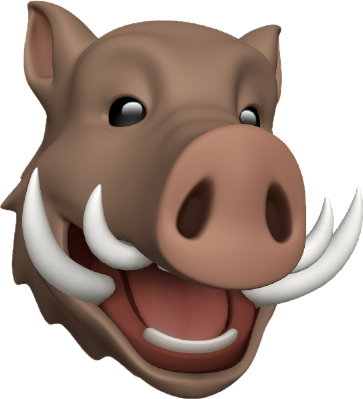

Minimalista, pero no vacía.
Quería una portada más cuidada, con mejor jerarquía visual, más aire y un aspecto más premium. La idea es que se vea limpia, rápida y muy intencional tanto en escritorio como en móvil.
Soy Antonio. Programo, experimento, pruebo cosas nuevas y de vez en cuando convierto una idea rara en algo que merece quedarse. Esta web pasa de “dominio abandonado” a espacio vivo para enseñar lo que voy construyendo.

Quería una portada más cuidada, con mejor jerarquía visual, más aire y un aspecto más premium. La idea es que se vea limpia, rápida y muy intencional tanto en escritorio como en móvil.
Herramientas pequeñas, utilidades y prototipos que nacen por pura curiosidad.
Una parte más lúdica para mezclar Magic, filtros y generadores sin complicarlo todo.
Referencias visuales, pruebas y piezas que acompañan lo técnico con algo más personal.
Aquí encaja perfectamente el randomizer, filtros por identidad de color y cualquier experimento con Scryfall o utilidades rápidas para montar partidas.
Herramientas rápidas para sacar comandantes, probar ideas y jugar con restricciones.
Opciones simples, estados visibles y una interfaz que no dé pereza usar varias veces.
La parte “friki” también puede sentirse limpia, moderna y bien rematada.
Quiero que esta web también tenga espacio para piezas gráficas, pruebas de estilo y recursos visuales que sumen identidad. Menos “galería vacía”, más selección cuidada.
Listo para mostrar trabajos, bocetos o piezas destacadas cuando quieras añadirlas.
Una base limpia para seguir creciendo sin tener que rediseñarlo todo cada dos semanas.
Herramientas pequeñas pero pulidas para hacer más divertida la parte práctica del juego.
Ideas raras, prototipos y recursos que nacen por curiosidad y a veces se quedan.